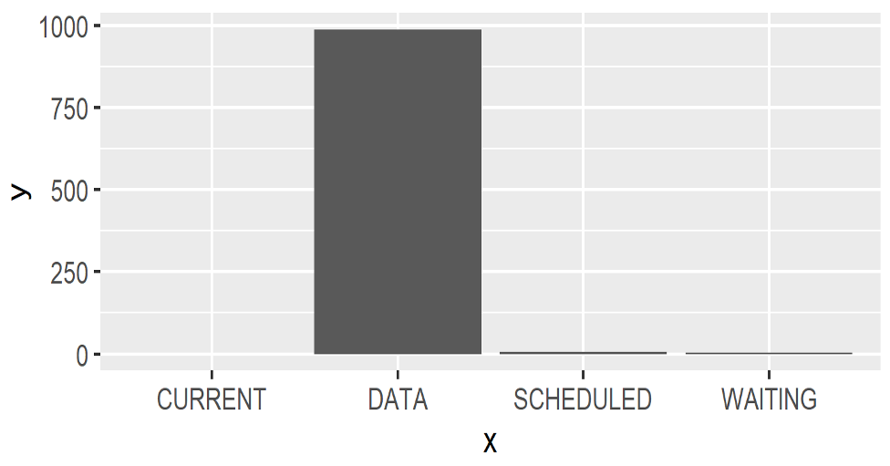

Component
Components are the key elements of a simulation. By providing a process definition of the business process in study, components allow modeling the interplay with other simulation components as well as its timing.
Components can be in different lifecycle state. An ACTIVE component has one or more process definitions of which one was activated at some point earlier in time.
If a component has an associated process definition, we can schedule it for execution using activate(). This will also change its state to become active ACTIVE,
An ACTIVE component can become DATA either with a cancel() or by reaching the end of its process definition.
It is very easy to create a DATA components which can be useful to model more passive elements in a model (such as production material).
val component = Component()
Components will interact with each other through a well-defined vocabulary of process interaction methods.
Info
By default, Components will be named automatically, using the pattern [Class Name].[Instance Number] unless a custom name is provided via the name parameter in Component(name="Foo"). Kalasim also supports auto-indexing if a provided component name ends with a dash -, dot . or underscore _. E.g. A first Component("Foo-") will be named Foo-1, a second one Foo-2 and so on.
Process Definition
Although it is possible to create a component directly with val x = Component(), this does not encode any simulation mechanics a there is process definition defining how the x will interact with the simulation environment. So, nearly always we define our simulation entities by extending Component and by providing a process definition which details out the component's life cycle:
Important
The process definition of a component defines its dynamics and interplay with other simulation entities. Writing down the process definition is the key modelling task when using kalasim.
If there is no process definition, a component will stay passive. Techncially, it is refrerred to as a DATA component.
There are 3 supported methods to provide a process definition.
1. Extend process
Let's start with the most common method. In order to define an ACTIVE component it is necessary to extend org.kalasim.Component to provide (at least) one sequence generator method, normally called process:
class Car: Component(){
override fun process() = sequence {
wait(customerArrived)
request(driver){
hold(4, "driving")
}
}
}
If we then later say val car = Car(), a component is created, and it is scheduled for execution within kalasim's event loop. The process method is nearly always, but not necessarily a generator method (i.e. it has at least one yield statement), so it contains suspension points where execution can be stalled.
It is also possible to set a time at which the component (car) becomes active, like val car = Car(delay=10). This requires an additional constructor argument to be passed on to Component as in class Car(delay:Number): Component(delay=delay).
Creation and activation are by default combined when creating a new Component instance:
val car1 = Car()
val car2 = Car()
val car3 = Car()
This causes three cars to be created and to be activated, so these instances are scheduled for execution in the simulation's event queue.
Info
In some situations, automatic activation of the process definition may not be needed or desired. If so, even in presence of a process or repeatedProcess method, you can disable the automatic activation (i.e. make it a data component), by specifying Component(process = Component::none).
Normally, any process definition will contain at least one yield statement. By doing so, the component can hand-back control to the simulation engine at defined points when a component needs to wait. Typically, the user must not use yield directly, but rather the provided process interaction methods.
2. Extend repeatedProcess
Another very common pattern when writing down process definitions, iteratively executed processes. This could be modelled directly as described above using process. But as shown in the following example, this lacks somewhat lacks conciseness:
class Machine : Component(){
override fun process() = sequence {
while(true) {
wait(hasMaterial)
hold(7, "drilling")
}
}
}
Luckily, this can be expressed more elegantly with repeatedProcess:
class Machine : Component(){
override fun repeatedProcess() = sequence {
wait(hasMaterial)
hold(7, "drilling")
}
}
3. Process Reference
A component may be initialized to start at another process definition method. This is achieved by passing a reference to this method which must be part of the component's class definition, like val car = Car(process = Car::wash).
It is also possible to prepare multiple process definition, which may become active later by means of an activate() statement:
////CraneProcess.kts
import org.kalasim.*
class Crane(
process: GeneratorFunRef? = Component::process
) : Component(process = Crane::load) {
fun unload() = sequence<Component> {
// hold, request, wait ...
}
fun load() = sequence<Component> {
// hold, request, wait ...
}
}
createSimulation {
val crane1 = Crane() // load will be activated be default
val crane2 = Crane(process = Crane::load) // force unloading at start
val crane3 = Crane(process = Crane::unload) // force unloading at start
crane3.activate(process = Crane::load) // activate other process
}
Effectively, creation and start of crane1 and crane2 is the same.
Inlining Subprocesses
To run/consume/inline another process definition, we can useyieldAll(subProcess()) to inline subProcess() defined for the same component. This allows to inline the entire process definition in a blocking manner. Here's an example how to do so:
//import org.kalasim.*
import kotlin.time.Duration.Companion.minutes
createSimulation {
enableComponentLogger()
object : Component() {
override fun process() = sequence {
hold(1.minute)
// to consume the sub-process we use yieldAll
yieldAll(subProcess())
// it will continue here after the sub-process has been consumed
hold(2.minutes)
}
fun subProcess(): Sequence<Component> = sequence {
hold(3.minutes)
}
}
run()
}
Toggling processes
It's a very effective tool in discrete simulation, to toggle the process definition of a component at runtime. Using activate() we can toggle processes very effectively in a simulation model. There are 3 ways to do so
- From with a component's process defintion
- Within another component process defintion
- Outside of any process definition.
The following example illustrates these examples as well as process inlining:
////Restaurant.kts
import org.kalasim.*
import kotlin.time.Duration.Companion.hours
import kotlin.time.Duration.Companion.minutes
data class Recipe(val name: String) {
override fun toString() = name
}
class Customer : Component() {
val restaurant = get<Restaurant>()
override fun process() = sequence<Component> {
hold(3.hours + 15.minutes) // arrive somewhen
restaurant.activate(process=Restaurant::cookSomething, Recipe("pasta"))
hold(30.minutes,"drink something while waiting for food")
// wait for the food preparation to complete
join(restaurant)
//order something else
restaurant.activate(process=Restaurant::specialOffer)
}
}
class Restaurant : Component() {
override fun process(): Sequence<Component> = sequence {
hold(2.hours, "opening restaurant")
}
fun cookSomething(recipe: Recipe) = sequence {
hold(10.minutes, "preparing $recipe")
log("dinner's ready! I am serving $recipe today")
}
fun specialOffer(): Sequence<Component> = sequence {
hold(5.minutes, "selecting dish of the day")
// We can activate another process from within a process definition
// Provide a recipe, set the `spicy` flag and delay activation by 5 minutes
activate(::cookSomethingSpecial, Recipe("cake"), true, delay = 5.minutes)
}
fun cookSomethingSpecial(recipe: Recipe, spicy: Boolean) = sequence {
hold(20.minutes, "preparing $recipe ...")
yieldAll(prepareDesert()) // inline sub-process
log("special dinner's ready!")
log("serving ${if(spicy) "spicy" else ""} $recipe and some desert")
}
// another small process without any arguments
fun prepareDesert() = sequence {
hold(15.minutes, "making a pie")
}
}
createSimulation {
enableComponentLogger()
// instantiate the simulation components
val restaurant = dependency { Restaurant() }
// create customer
Customer()
// run the model
run()
// activate process with arguments from outside a process definition
restaurant.activate(
process = Restaurant::cookSomething,
processArgument = Recipe("lasagne")
)
// and run again
run()
}
Lifecycle
A simulation component is always in one of the following states modelled by org.kalasim.ComponentState:
CURRENT- The component's process is currently being executed by the event queueSCHEDULED- The component is scheduled for future executionPASSIVE- The component is idleREQUESTING- The component is waiting for a resource requirement to be metWAITING- The component is waiting for a state predicate to be metSTANDBY- The component was put on standbyINTERRUPTED- The component was interruptedDATA- The component is non of the active states above. Components without aprocessdefinition are always in this state.
A component's status is managed via the property component.componentState, and is automatically tracked with a level monitor named component.statusTimeline.
The statusMonitor can be consumed in different ways. It possible to check how long a component has been in a particular state with
val passiveDuration = component.statusMonitor[ComponentState.PASSIVE]
component.statusMonitor.printHistogram()
Accumulated times in a particular state can be obtained with summed() and be printed to console or displayed with the selected graphics backend
val timeInEachState = component.statusMonitor.summed()
timeInEachState.printConsole()
timeInEachState.display()

Process Interaction
The scheme below shows how interaction relate to component state transitions:
| from/to | data | current | scheduled | passive | requesting | waiting | standby | interrupted |
|---|---|---|---|---|---|---|---|---|
| data | activate1 | activate | ||||||
| current | process end | yield hold | yield passivate | yield request | yield wait | yield standby | ||
| . | yield cancel | yield activate | ||||||
| scheduled | cancel | next event | hold | passivate | request | wait | standby | interrupt |
| . | activate | |||||||
| passive | cancel | activate1 | activate | request | wait | standby | interrupt | |
| . | hold2 | |||||||
| requesting | cancel | claim honor | activate3 | passivate | request | wait | standby | interrupt |
| . | time out | activate4 | ||||||
| waiting | cancel | wait honor | activate5 | passivate | wait | wait | standby | interrupt |
| . | timeout | activate6 | ||||||
| standby | cancel | next event | activate | passivate | request | wait | interrupt | |
| interrupted | cancel | resume7 | resume7 | resume7 | resume7 | resume7 | interrupt8 | |
| . | activate | passivate | request | wait | standby |
- Via
scheduled() - Not recommended
- With
keepRequest = false(default) - With
keepRequest = true. This allows to set a new time out - With
keepWait = false(default) - With
keepWait = true. This allows to set a new timeout - State at time of interrupt
- Increases the
interruptLevel
hold
This method is utilized to suspend a component for a specific duration of simulation time. It changes that the state of a - usually current - component to scheduled. By invoking the hold method, control is returned from the process definition back to the simulation engine.
After the specified hold duration, the engine will resume the execution of the process definition. This becomes a crucial method in kalasim, as it dictates the temporal flow of the overall process.
Here's a basic example illustrating this process:
object : Component("Something") {
override fun process() = sequence {
hold(10.minutes, description = "some action")
// ^^ This is telling kalasim to suspend execution of this process
// for 10 simulation minutes
// ... 10 minutes later ...
// After these 10 minutes, it will continue execution of the process
hold(1.minutes, description = "some other action ")
}
}
Supported parameters in hold() are
duration- The duration for which the component should be held.description- An optional description for the hold operation.until- The simulation time until which the component should be held. If provided, the component will be held until the specified simulation time.priority- The priority of the hold operation. A higher priority value indicates a higher priority. Defaults toNORMAL.urgent- A flag indicating whether the hold operation is urgent. If set to true, the component will be scheduled with the highest possible priority. Defaults tofalse.
Either duration or until must be specified when calling hold() to indicate the intended delay.
State Contract
The state contract when calling hold() is as follows
- If the component is
CURRENT, it will suspend execution internally, and the component becomes scheduled for the specified time - If the component to be held is passive, the component becomes scheduled for the specified time.
- If the component to be held is scheduled, the component will be rescheduled for the specified time, thus essentially the same as activate.
- If the component to be held is standby, the component becomes scheduled for the specified time.
- If the component to be activated is requesting, the request will be terminated, the attribute failed set and the component will become scheduled. It is recommended to use the more versatile activate method.
- If the component to be activated is waiting, the wait will be terminated, the attribute failed set and the component will become scheduled. It is recommended to use the more versatile activate method.
- If the component is interrupted, the component will be activated at the specified time.
activate
activate() will schedule execution of a process definition at the specified time. If no time is specified, execution will be scheduled for the current simulation time. If you do not specify a process, the current process will be scheduled for continuation. If a process argument is provided, the process will be started (or restarted if it is equal to the currently active process).
Car() // default to process=Component::process or Component::repeatedProcess
Car(process=Component::none) // no process, which effectivly makes the car DATA
val car = Car(process=Car::driving) // start car in driving mode
// stop driving (if still ongoing) and activate refilling process
car1.activate(process=Car::refilling)
// activate defined process if set, otherwise error
car0.activate()
Parameters
Supported parameters in activate()
process- The name of the process to be started. If set toNone, the process will not be changed. If the component is a data component, the generator functionprocesswill be used as the default process. Optionally type safe arguments can be provided to the generator function viaprocessArgumentandotherProcessArgumentprocessArgument- The argument to be passed to the process.at- The schedule time. If omitted, nodelayis used.delay- The delay before starting the process. It uses aDurationobject to specify the delay amount. The default value isDuration.ZERO.priority- The priority level of the activation. It uses thePriorityenumeration with options HIGH, NORMAL, and LOW. The default value is NORMAL.urgent- Indicates whether the activation is urgent or not. If set to true, the activation will be treated as urgent. The default value is false.keepRequest- Indicates whether to keep the activation request even after the process is started. If set to true, the activation request will be kept. The default value is false.keepWait- Indicates whether to keep waiting for the process to complete before returning. If set to true, the activation will not return until the process is complete. The default value is false.
State Contract
The state contract when calling hold() is as follows
- If the component to be activated is
DATA, unless provided withprocessthe defaultComponent::processwill be scheduled at the specified time. - If the component to be activated is
PASSIVE, the component will be activated at the specified time. - If the component to be activated is
SCHEDULED, the component will get a new scheduled time. - If the component to be activated is
REQUESTING, the request will be terminated, the attribute failed set, and the component will become scheduled. If keep_request=True is specified, only the fail_at will be updated, and the component will stay requesting. - If the component to be activated is
WAITING, the wait will be terminated, the attributefailedset, and the component will become scheduled. IfkeepWait=trueis specified, only thefailAtwill be updated, and the component will stay waiting. - If the component to be activated is
STANDBY, the component will get a new scheduled time and become scheduled. - If the component is
INTERRUPTED, the component will be activated at the specified time.
Misc
Important
It is not possible to activate() the CURRENT component without providing a process argument. kalasim will throw an error in this situation. The effect of a "self"-activate would be that the component becomes scheduled, thus this is essentially equivalent to the preferred hold method, so please use hold instead. The error is a safe-guard mechanism to prevent the user from unintentionally rescheduling the current component again.
In situations where the current process need to be restarted, we can use activate yield(activate(process = Component::process)) which will bypass the internal requirement that the activated component must not be CURRENT.
Although not very common, it is also possible to activate a component at a certain time or with a specified delay:
ship1.activate(at=100)
ship2.activate(delay=50.minutes)
Note
It is possible to use activate() outside of a process definition, e.g. to toggle processes after some time
sim.run(10)
car.activate(process=Car::repair)
sim.run(10)
We can use activate to toggle the active process of a component
passivate
Passivate is the way to make a - usually current - component passive. This is essentially the
same as scheduling for time=inf.
- If the component to be passivated is
CURRENT, the component becomes passive, and it will suspend execution internally. - If the component to be passivated is
passive, the component remainspassive. - If the component to be passivated is
scheduled, the component becomespassive. - If the component to be held is
standby, the component becomespassive. - If the component to be activated is requesting, the request will be terminated, the attribute failed set and the component becomes passive. It is recommended to use the more versatile activate method.
- If the component to be activated is waiting, the wait will be terminated, the attribute failed set and the component becomes passive. It is recommended to use the more versatile activate method.
- If the component is interrupted, the component becomes passive.
cancel
Cancel has the effect that the component becomes a data component.
- If the component to be cancelled is
CURRENT, it will suspend execution internally. - If the component to be cancelled is
passive, scheduled, interrupted or standby, the component becomes a data component. - If the component to be cancelled is
requesting, the request will be terminated, the attribute failed set, and the component becomes a data component. - If the component to be cancelled is waiting, the wait will be terminated, the attribute failed set and the component becomes a data component.
Examples
standby
Standby has the effect that the component will be triggered on the next simulation event.
- If the component is
CURRENT, it will suspend execution internally - Although theoretically possible, it is not recommended to use standby for non current components. If needed to do so, the pattern to provide the correct receiver is
with(nonCurrent){ standby() } - Not allowed for
DATAcomponents ormain
Examples
request
Request has the effect that the component will check whether the requested quantity from a resource is available. It is possible to check for multiple availability of a certain quantity from several resources.
Instead of checking for all of number of resources, it is also possible to check for any of a number of resources, by setting the oneOf parameter to true.
By default, there is no limit on the time to wait for the resource(s) to become available. However, it is possible to set a time with failAt at which the condition has to be met. If that failed, the component becomes CURRENT at the given point of time. This is also known as reneging.
If the component is canceled, activated, passivated, interrupted or held the failed flag will be set as well.
- If the component is
CURRENT, it will suspend execution internally - Although theoretically possible it is not recommended to use request for non current components. If needed to do so, the pattern to provide the correct receiver is
with(nonCurrent){ request(r) }
A component can also actively renege a pending request by calling release(resource). See Bank3ClerksRenegingResources for an example (as well as Bank3ClerksReneging Bank3ClerksRenegingState for other supported reneging modes).
wait
Wait has the effect that the component will check whether the value of a state meets a given condition. It is possible to check for multiple states. By default, there is no limit on the time to wait for the condition(s) to be met. However, it is possible to set a time with failAt at which the condition has to be met. If that failed, the component becomes CURRENT at the given point of time. The code should then check whether the wait had failed. That can be checked with the Component.failed property.
If the component is canceled, activated, passivated, interrupted or held the failed flag will be set as well.
- If the component is
CURRENT, it will suspend execution internally - Although theoretically possible it is not recommended to use wait for non current components. If needed to do so, the pattern to provide the correct receiver is
with(nonCurrent){ wait() }
Examples
Supported parameters in wait
state- A state variablewaitFor- The state value to wait fordescription- The description of the wait request.triggerPriority- The queue priority to be used along with a state change triggerfailAt- If the request is not honored before fail_at, the request will be cancelled and the parameter failed will be set. If not specified, the request will not time out.failDelay- If the request is not honored beforenow + failDelay, the request will be cancelled and the parameter failed will be set. if not specified, the request will not time out.failPriority- Schedule priority of the fail event. If a component has the same time on the event list, this component is sorted according to the priority. An event with a higher priority will be scheduled first.
interrupt
With interrupt components that are not current or data can be temporarily be interrupted. Once a resume is called for the component, the component will continue (for scheduled with the remaining time, for waiting or requesting possibly with the remaining fail_at duration).
Examples
Usage of process interaction methods within a function or method
There is a way to put process interaction statement in another function or method. This requires a slightly different way than just calling the method.
As an example, let's assume that we want a method that holds a component for a number of minutes and that the time unit is actually seconds. So we need a method to wait 60 times the given parameter.
We start with a not so elegant solution:
object : Component() {
override fun process() = sequence<Component>{
hold(5.days)
hold(5.hours)
}
}
Now we just add a method holdMinutes. Direct calling holdMinutes is not possible. Instead, we have to define an extension function on SequenceScope<Component>:
object : Component() {
override fun process() = sequence {
holdMinutes()
holdMinutes()
}
private suspend fun SequenceScope<Component>.holdMinutes() {
hold(5.minutes)
}
}
All process interaction statements including passivate, request and wait can be used that way!
So remember if the method contains a yield statement (technically speaking iss a generator method), it should be called with from an extension function.
Component Generator
The creation of components is a key function of most simulations. To facilitate component creation, a ComponentGenerator can be used to create components according to a given inter arrival time (or distribution).
ComponentGenerator(iat = exponential(lambda, rg)) {
Customer()
}
The following arguments are supported when setting up a component generator
- Inter arrival duration
iator distribution between history/generations. - A builder named
builderof typeEnvironment.(counter: Int) -> Tallows to specify how the objects of typeTare generated. Thereby,countercan be used to name the objects accordingly.
There are also additional arguments available to support more custom/advanced use-cases:
startAt- time where the generator starts its operation. If omitted,nowis used.forceStart- Iffalse(default), the first component will be generated attime = startAt + iat(). Iftrue, the first component will be generated atstartAt.until- time up to which components should be generated. If omitted, no end.total- (maximum) number of components to be generated.name- Name of the component. If the name ends with a period (.), auto serializing will be applied.priority- If a component has the same time on the event list, this component is scheduled according to the priority. An event with a higher priority will be scheduled first.keepHistory- Iftrue, i will store a reference of all generated components which can be queried withhistory.envProvider- The simulation context to be used to resolve theorg.kalasim.Environment
Note, that the entities being created are not required to extend org.kalasim.Component, but can be in fact arbitrary types.
Usage:
////ComponentGeneratorExamples.kts
import org.kalasim.*
import kotlin.time.Duration.Companion.days
import kotlin.time.Duration.Companion.hours
import kotlin.time.Duration.Companion.minutes
createSimulation {
// example 1
// we can schedule with a probabilist inter-arrival distribution
data class Customer(val id: Int)
ComponentGenerator(uniform(5.minutes, 2.hours)) { customerNo ->
Customer(customerNo)
}
// we can also schedule with a fixed rate
// here we create 3 strings with fixed inter-arrival duration
ComponentGenerator(3.minutes, total = 3) { it }
// example 2
// we define a component with simplistic process definition
class Car() : Component() {
override fun process() = sequence {
hold(3.hours, description = "driving")
}
}
ComponentGenerator(exponential(3.minutes), until = now + 3.days) {
Car() // when creating a component it will be automatically scheduled next
}
// example 3 no-longer recommend:
// inter-arrival distribution without duration unit
ComponentGenerator(uniform(3, 4).minutes) { Customer(it) }
}
More examples